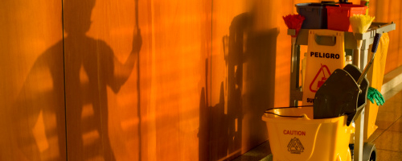

Servicios
Equipo de trabajo experimentado y altamente profesional.
- Metodología que permite seguir procesos de mejora y calidad en el servicio.
- Sistema de evaluación a todos los niveles de nuestros Colaboradores.
- Trabajamos con nuestro propio equipo humano o según el caso, el del Cliente.
- Consultoría técnica de nuestros expertos respecto del cuidado en alfombras, pisos y áreas verdes.
Nos Especializamos
Serviplus reconoce que la limpieza depende de la imagen que una empresa proyecta a sus clientes.
Además, ayuda a conservar mejor sus instalaciones, ahorrando costos de reposición a través de un adecuado mantenimiento...
Limpieza de mantenimiento
Consiste en la limpieza regular...
Limpieza de finalización de obra
Tal como su nombre indica...
Áreas Verdes
Se refiere al mantenimiento o adición...
También ofrecemos:
- Abrillantado de pisos
- Limpieza de superficies tapizadas

Serviplus
Por un contrato trimestral o anual, brindamos el servicio de mantenimiento cotidiano en sus instalaciones. Diariamente un numero predeterminado de operarios se presentan para cumplir su rutina, previamente diseñada por Serviplus y aceptada por el Cliente. Este convenio ofrece ventajas a la empresa que recibe el servicio en aspectos fundamentales como son, los económicos, laborales, legales y operativos.
Previo a cada contracto, nuestros técnicos inspeccionan el establecimiento donde se llevará a cabo el trabajo y determinan el sistema operativo a aplicar y los equipos más adecuados para cada sector.
El trabajo de campo se ejecuta junto con un estudio que definen las tareas a realizar. También se determina qué productos serán los más efectivos para cada caso. Utilizamos equipos y elementos de alta tecnología para alcanzar estándares de calidad óptimos, logrando así un trabajo eficaz y con garantía.
